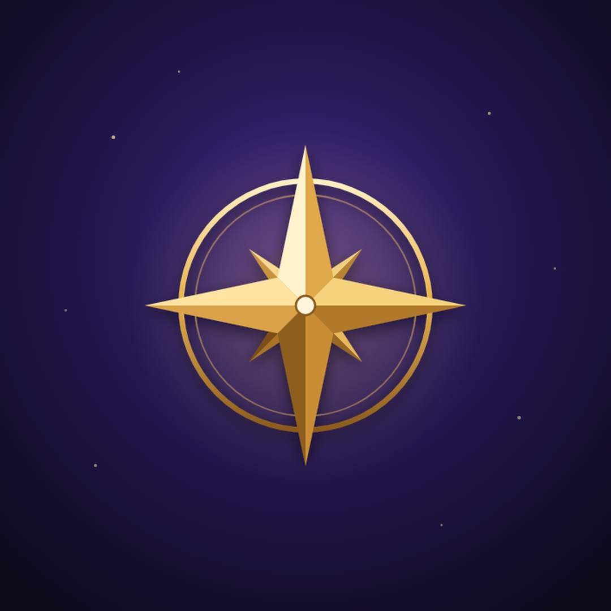

WAYWARD
Logo en banner
De goede bestanden voor Instagram, TikTok en YouTube, in het juiste formaat.
Opslaan op je telefoon: houd de afbeelding ingedrukt en kies Afbeelding downloaden. Hij staat daarna in je Galerij (map Downloads). Lukt ingedrukt houden niet, tik dan op Volledige grootte en houd hem daar ingedrukt.
Profielfoto
1080 × 1080 · voor Instagram, TikTok en de kanaalfoto van YouTube

zo ziet het eruit als rondje
YouTube-banner
2560 × 1440 · kanaalbanner (YouTube Studio → Aanpassen → Branding → Bannerafbeelding)
- Logo en tekst staan in het middenvak dat op telefoon, laptop en tv altijd te zien is; YouTube snijdt de rest per scherm anders bij.
- YouTube vraagt bij uploaden om het bijsnijden te controleren: gewoon op Klaar tikken.
Op je laptop staan dezelfde bestanden in C:\Users\voorm\Documents\Wayward-release\socials. Plak dat pad in de adresbalk van Verkenner en druk op Enter.